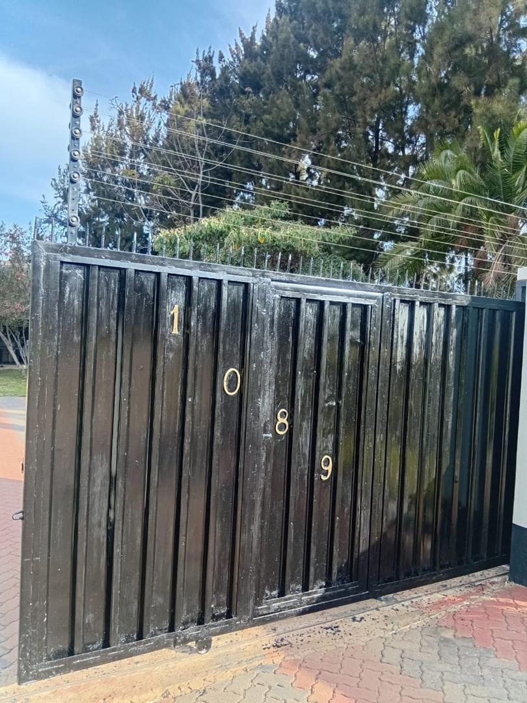
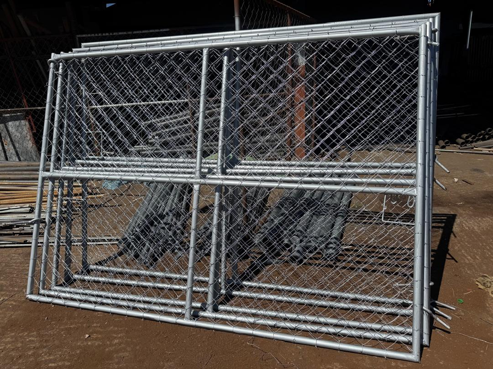
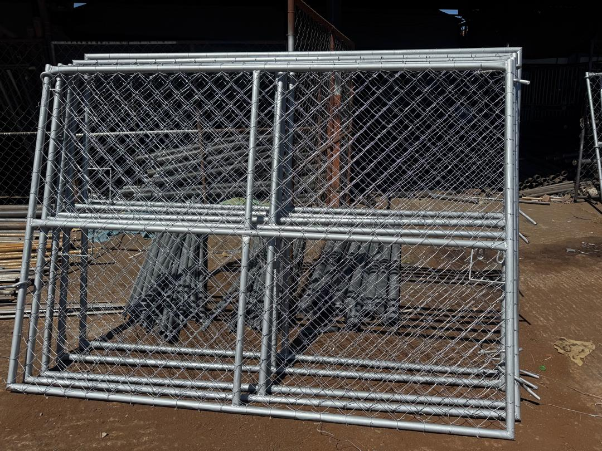

Arrive home with confidence and enjoy the convenience of opening your gate at the touch of a button — professional electric gate motor installation from Azzar Steel & Fencing.
Opening a gate manually means stepping out — at night, in the rain, or when you're simply in a hurry. An electric gate motor lets you open and close your gate from inside your car, with the push of a button.

Fill in the form above or message us on WhatsApp — takes less than a minute.
Our team visits your property, assesses your gate, and recommends the right motor for your setup.
We supply and install your electric gate motor, test it thoroughly, and hand it over ready to use.


10+ years supplying and installing fencing, steel, and gate automation solutions for homes, farms, and businesses across Zimbabwe.